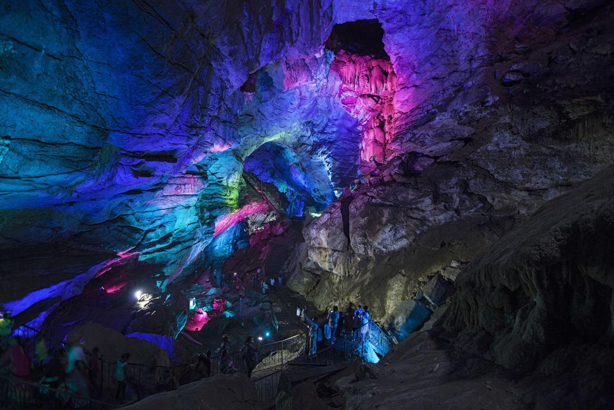

Borra Caves
Explore the mysterious beauty of Borra Caves, one of India’s most remarkable natural cave systems, hidden amidst the scenic Ananthagiri Hills. Formed naturally over millions of years, these limestone caves are famous for their extraordinary stalactite and stalagmite formations that create fascinating shapes and patterns. Illuminated with colorful lighting, the caves reveal an underground world filled with dramatic rock structures and a sense of wonder. The cool atmosphere inside the caves contrasts beautifully with the surrounding green hills and forests outside. Visitors are drawn not only to the geological marvels but also to the adventurous experience of walking through the vast chambers and pathways. Borra Caves offer a unique blend of natural beauty, mystery, and exploration.